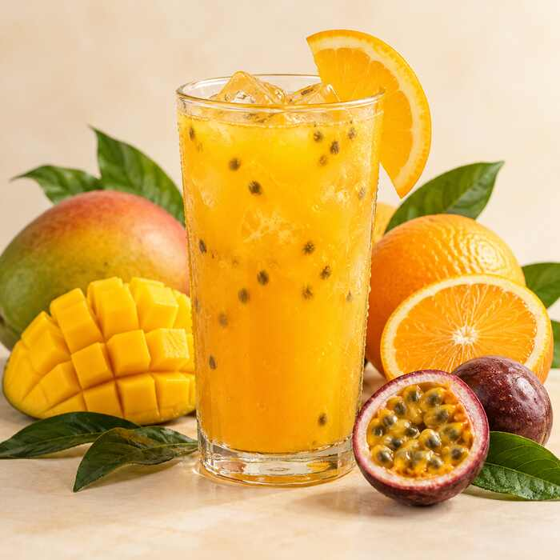

Nuestras bebidas
Descubre nuestra variedad de jugos y batidos preparados con diferentes frutas y sabores naturales.
Ver productos
Descubre Foodily
Nuestras opciones de bebidas

Frescura en cada bebida
En Foodily presentamos diferentes alternativas de jugos y batidos elaborados con combinaciones de frutas y otros ingredientes.
Cada bebida cuenta con ingredientes y sabores particulares para que nuestros visitantes puedan conocer las opciones disponibles.
Nuestro catálogo
Conoce nuestras bebidas

Jugo tropical
Combinación de mango, naranja y maracuyá.
Batido verde
Elaborado con manzana, pepino y espinaca.
Jugo de piña
Preparado con piña, naranja y agua.
Nuestra propuesta
Variedad para diferentes gustos
Nuestro catálogo reúne alternativas de bebidas frutales con distintos ingredientes y combinaciones. En Foodily buscamos ofrecer una presentación clara de cada opción para que nuestros visitantes puedan conocer sus características.